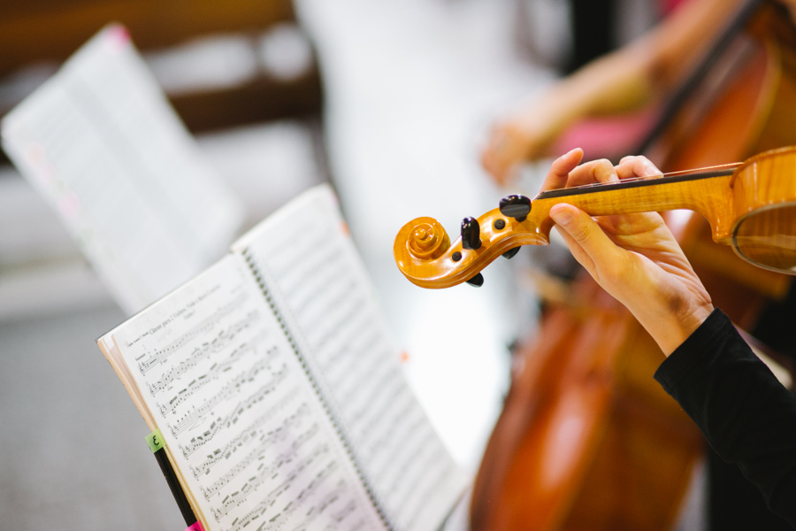

Músicas para cerimônia de casamento - As mais tocadas em 2017!
29 de dezembro de 2017
A cerimônia é o momento mais emocionante da celebração do casamento e as músicas escolhidas são fundamentais para trazer ainda mais sentimento e personalidade!
Músicas para cerimônia de casamentoEscolher as músicas para cerimônia de casamento pode ser uma tarefa difícil, mas nada de pânico!
Fizemos uma pesquisa detalhada com as músicas mais tocadas pelo Quartilis em 2017 e segue aqui uma lista com as 20 mais pedidas!!!

Músicos para casamentoMúsicas para cerimônia de casamento - As mais tocadas em 2017!
Em 2017 o Quartilis teve a oportunidade de fazer a trilha sonora de 163 cerimônias de casamento e preparamos uma lista com as 20 mais tocadas neste ano para inspirar a sua escolha de músicas para cerimônia de casamento.
(clique no titulo das músicas para assistir aos videos no Youtube ;)
20- Concerning Hobbits (Howard Shore)
Música tema dos Hobbits (filmes da trilogia "O Senhor dos Anéis" e "O Hobbit"). Essa música leve e alegre fica muito legal para entrada do noivo fã do filme e também para damas e pajens!
19- Trem Bala (Ana Vilela)
Sucesso em 2017, essa linda canção também virou hit nas cerimônias de casamento. Foi mais tocada para a entrada dos pais, mas também bastante usual nas assinaturas, entrada de damas e até na saída dos noivos.
18- Somewhere over the rainbow - Israel Kamakawiwo´ole
Já faz alguns anos que essa versão reggae da trilha sonora do clássico Magico de Oz é sucesso garantido. Música leve, animada e alto astral. Fica linda para entrada de damas adultas, demoiselles, crianças, assinaturas e até para saída.
17- Alecrim Dourado
Perfeita para a entrada das crianças, evoca lembranças para todas as idades e faz parte do repertório infantil, além de ser uma música delicada e alegre.
16- Sweet Child O'Mine - Guns´n Roses
Clássico do Rock que combina muito com os instrumentos de cordas, Sweet Child o'Mine é uma opção para entrada do noivo ou mesmo para a saída da cerimônia.
15- Aquarela - Toquinho
"Vamos todos numa linda passarela, de uma aquarela que um dia enfim, descolorirá..." Música brasileira que até hoje encanta gerações. Linda para entrada das damas e pajens.
14- Agnus Dei - Michael W. Smith
Do repertório gospel, combina com qualquer estilo de cerimônia. Normalmente tocada para entrada de pastor ou pais, além da benção das alianças. É uma música que começa suave e caminha para um "crescendo" de emoção.
13 - Thinking Out Loud - Ed Sheeran
Ed Sheeran entrou com tudo no repertório dos casamentos! Thinking out Loud é romântica e fica linda seja instrumental ou cantada, para entrada do noivo, troca das alianças, votos, assinaturas e qualquer outro momento emocionante da cerimônia.
12- All my Love - Led Zeppelin
Rock de 1979, com letra romântica que tem tudo a ver com a cerimônia de casamento, ganhou versão impactante nos instrumentos de cordas. Foi uma das mais tocadas para a entrada do noivo, mas também tocamos para entrada da noiva e padrinhos.
11 - I say a little pray for you - Aretha Franklin
Veio direto da trilha sonora do filme "O casamento do meu melhor amigo" para a trilha de muitos casamentos!!! Escolhida principalmente para a saída dos noivos, também fica legal para a entrada dos padrinhos ou pais.
10 - All of me - John Legend
"Cause all of me loves all of you..." Letra romântica combinada com melodia original só podia virar sucesso nas cerimônias de casamento! Linda para a entrada de noivos românticos ou votos, já ganhou inclusive versão combinada com a Marcha Nupcial para a entrada da noiva.
9- Photograph - Ed Sheeran
Outra música linda do cantor Ed Sheeran. Combina com a entrada dos pais, do noivo, alianças, votos e assinaturas. De emocionar qualquer um!
8- Viva la Vida - Coldplay
Embora a banda Coldplay tenha outros sucessos nas cerimônias de casamento (como Paradise, A Sky full of Stars, Every teardrop is a waterfall), Viva la Vida continua sendo a mais pedida pelos noivos. A mais tocada na saída dos noivos também foi trilha sonora para entrada do noivo e também entrada de padrinhos. A batida ritmada e marcante com as cordas é o motivo do sucesso, que a torna animada e impactante.
7- Jesus Alegria dos Homens - J. S. Bach
Música atemporal de Bach que combina com cerimônias em igreja (católica ou evangélica) e foi tocada para entrada dos pais, alianças, comunhão e benção. Dispensa comentários por sua beleza que resiste a séculos!
6- Canon in D - Pachelbel
Mais uma composição atemporal, escrita no período barroco, que encanta a todos cada vez mais. Combina com qualquer momento da cerimônia, de qualquer estilo. Durante último casamento de 2017 tocamos para entrada da noiva em um casamento no campo e foi muito emocionante: clique aqui para ver o post.
5- A Thousand Years - Christina Perri
A música foi lançada como segundo single da trilha sonora da Saga Crepúsculo e, desde então, é sucesso nos casamentos principalmente na entrada da noiva. Costumamos dizer que já virou trilha sonora de casamento pois ninguém associa mais ao filme....rsrs....a letra romântica e a melodia marcante formam uma combinação de arrancar lágrimas.
4- Hallelujah - Leornard Cohen
A data de lançamento da música é de 1984, mas ficou famosa após ser incluída na trilha sonora do filme Shrek. Já foi gravada por vários artistas famosos e tem uma letra em português. É outra música que combina com qualquer estilo e momento da cerimônia.
3- A Bela e a Fera - Disney (Alan Menken)
Sucesso nos casamentos desde o desenho da Disney, veio ao topo das paradas com o relançamento do filme em 2017. Foi a música mais tocada para a entrada de damas e pajens.
2- Ave Maria - Gounod
O segundo lugar ficou com a Ave Maria de Charles Gounod. Muito tocada nas cerimônias católicas no momento da benção das alianças, também foi trilha sonora da entrada de muitas noivas devotas de Nossa Senhora. Uma ótima escolha de músicas para cerimônia de casamento na igreja, por atravessar gerações e evocar a religiosidade no ponto alto da celebração.
1- Marcha Nupcial - Mendelssohn
Primeiro lugar disparado na trilha sonora dos casamentos, a Marcha Nupcial de Mendelssohn foi a campeã de 2017. Embora atualmente seja muito comum a noiva entrar com outras músicas e até mesmo com a combinação da Marcha Nupcial e outras músicas , a Marcha tradicional ainda é a preferida das nossas noivas!!!
(Obs: nos casos de combinação da Marcha com outras músicas, a mesma não foi computada na pesquisa).
E aí, gostaram?
Para dicas sobre a contratação dos músicos, acesse nosso post.